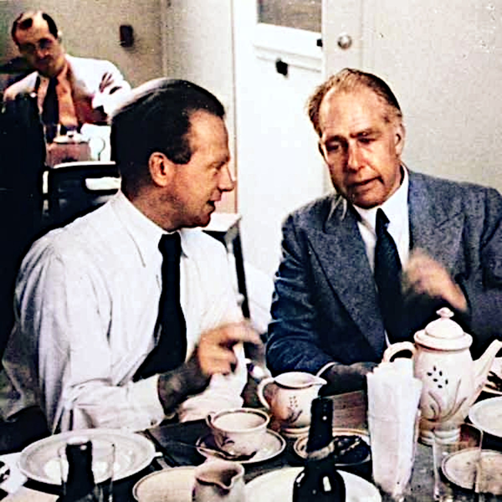
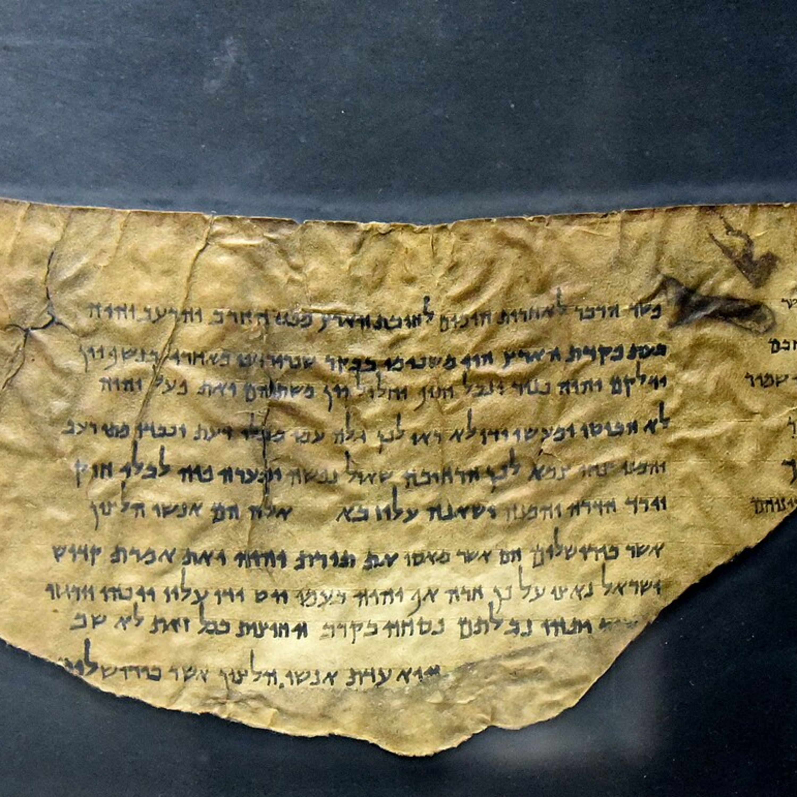
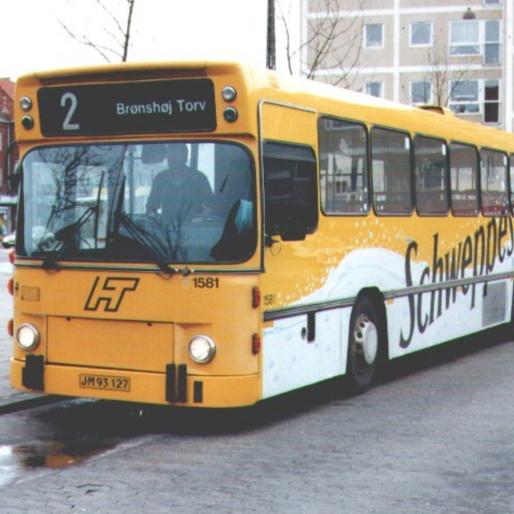
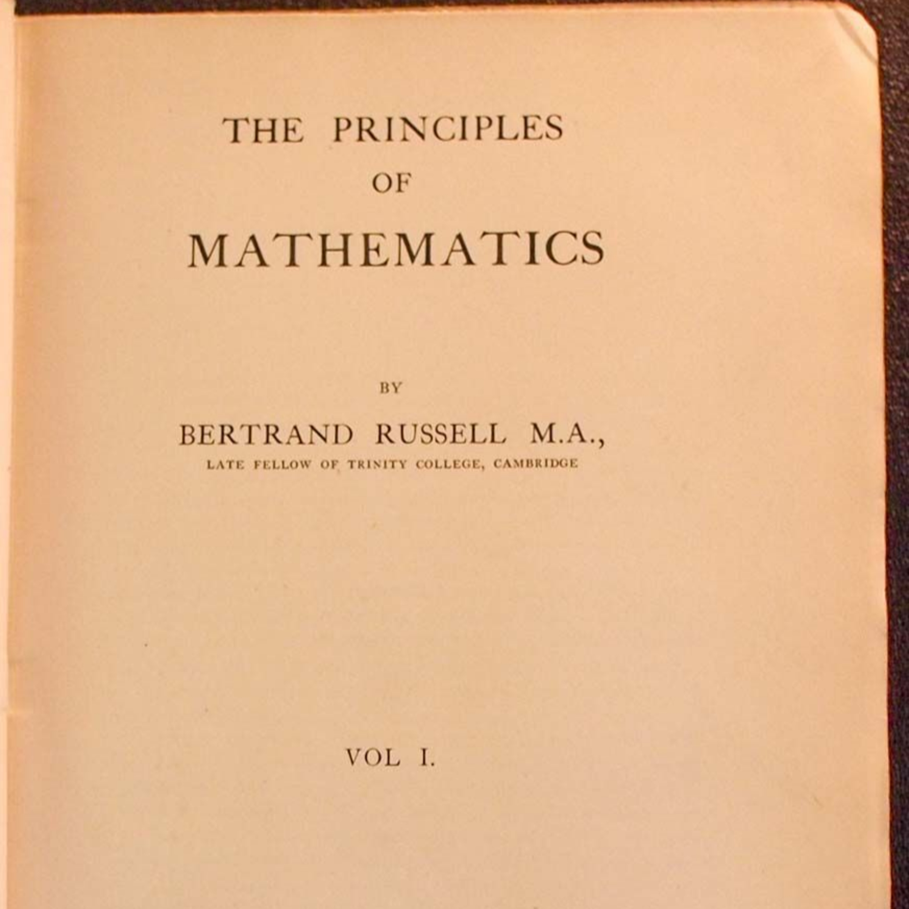
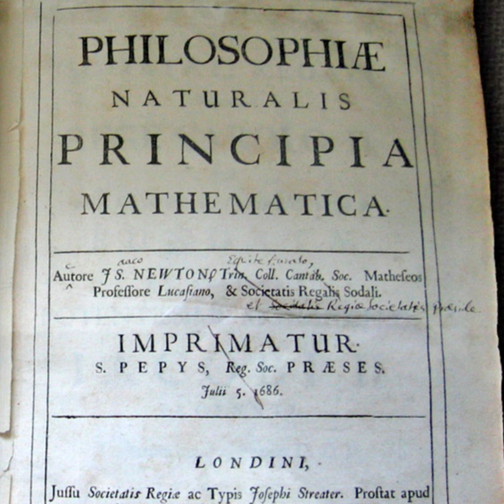
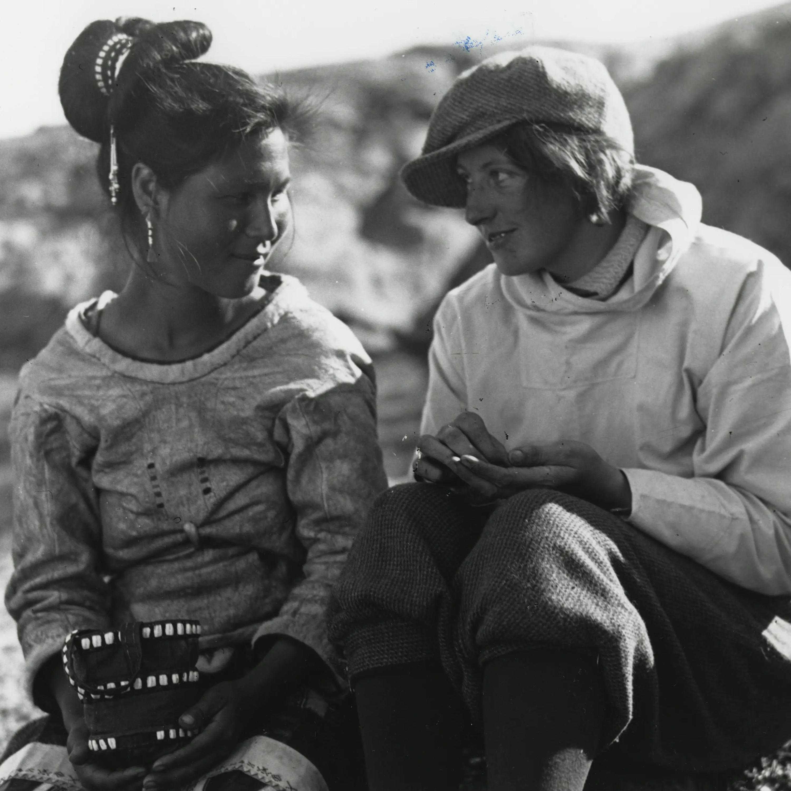
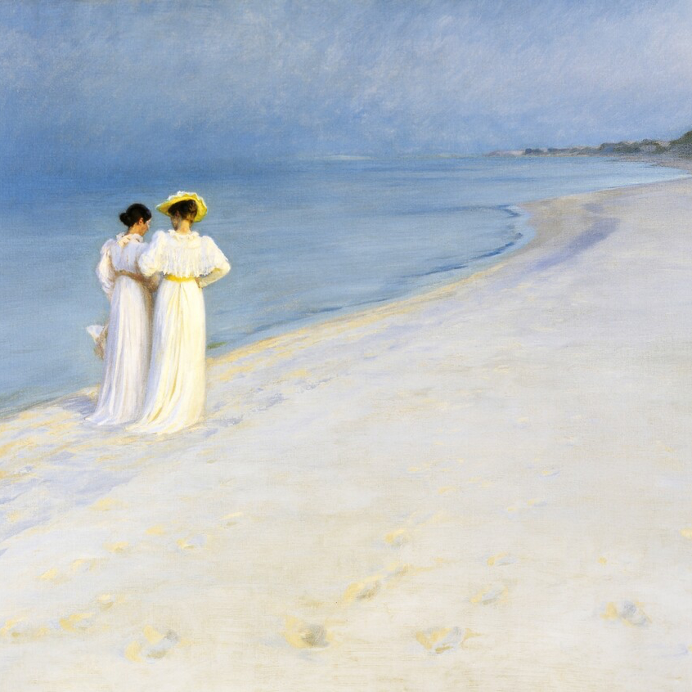
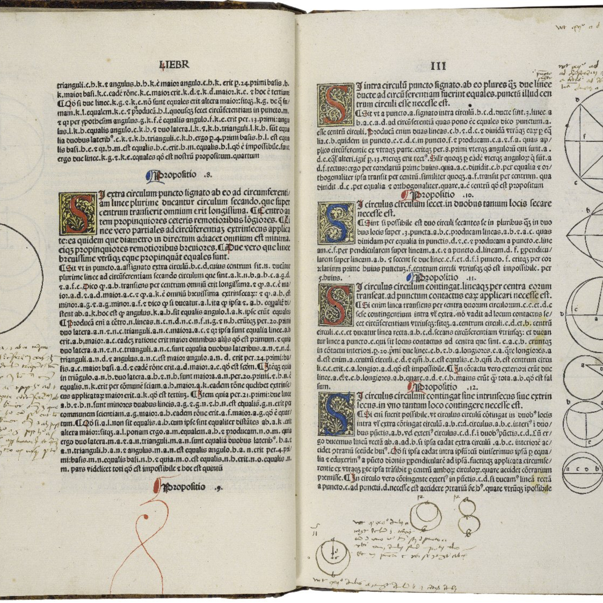
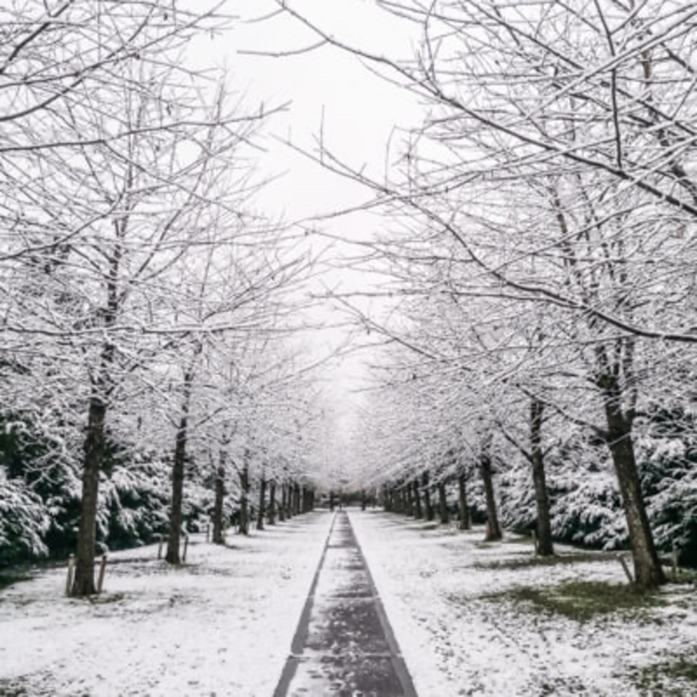

Копенгагенская интерпретация
Apple Podcasts · Spotify · RSS


#9.1 Смилла – Лагерман
Одна старуха от чрезмерного любопытства вывалилась из окна, упала и разбилась.
Из окна высунулась другая старуха и стала смотреть вниз на разбившуюся, но от чрезмерного любопытства тоже вывалилась из окна, упала и разбилась.
Потом из окна вывалилась третья старуха, потом четвертая, потом пятая.
Когда вывалилась шестая старуха, мне надоело смотреть на них, и я пошёл на Мальцевский рынок, где, говорят, одному слепому подарили вязаную шаль.

#7 Смилла – Прокурор и подвал
Пророк
Духовной жаждою томим,
В пустыне мрачной я влачился, —
И шестикрылый серафим
На перепутье мне явился.
Перстами легкими как сон
Моих зениц коснулся он.
Отверзлись вещие зеницы,
Как у испуганной орлицы.
Моих ушей коснулся он, —
И их наполнил шум и звон:
И внял я неба содроганье,
И горний ангелов полет,
И гад морских подводный ход,
И дольней лозы прозябанье.
И он к устам моим приник,
И вырвал грешный мой язык,
И празднословный и лукавый,
И жало мудрыя змеи
В уста замершие мои
Вложил десницею кровавой.
И он мне грудь рассек мечом,
И сердце трепетное вынул,
И угль, пылающий огнем,
Во грудь отверстую водвинул.
Как труп в пустыне я лежал,
И бога глас ко мне воззвал
«Восстань, пророк, и виждь, и внемли,
Исполнись волею моей,
И, обходя моря и земли,
Глаголом жги сердца людей».
Пророк
С тех пор как Вечный Судия
Мне дал всеведенье пророка,
В очах людей читаю я
Страницы злобы и порока.
Провозглашать я стал любви
И правды чистые ученья —
В меня все ближние мои
Бросали бешено каменья.
Посыпал пеплом я главу,
Из городов бежал я нищий,
И вот в пустыне я живу,
Как птицы, даром Божьей пищи.
Завет Предвечного храня,
Мне тварь покорна там земная.
И звезды слушают меня,
Лучами радостно играя.
Когда же через шумный град
Я пробираюсь торопливо,
То старцы детям говорят
С улыбкою самолюбивой:
«Смотрите: вот пример для вас!
Он горд был, не ужился с нами:
Глупец, хотел уверить нас,
Что Бог гласит его устами!
Смотрите ж, дети, на него:
Как он угрюм, и худ, и бледен!
Смотрите, как он наг и беден,
Как презирают все его!»

#5 Смилла – Юлиана и Ноготь
[Калигула] Смотрит на Геликона. Я знаю, что ты думаешь. Столько шуму из-за смерти одной женщины. Не в этом дело. Правда, несколько дней я не мог отвязаться от мысли, что женщина, которую я любил, мертва. Но что такое любовь? Такая малость! И эта смерть - ничто, уверяю тебя. Она только знак некой правды, которая делает луну необходимой. Эта правда совсем простая и совсем ясная, немного глупая, но ее трудно открыть и тяжело выдержать. Геликон. И что ж это за правда, Кай? Калигула (отвернувшись, равнодушно). Люди умирают и они несчастны. Геликон (после паузы). Ну, Кай, с этой правдой они научились ладить. Погляди вокруг. Она не портит им аппетита.----Статья Рудольфа Бергаhttp://wayback-01.kb.dk/wayback/20101108105725/http://www2.kb.dk/tekster/berghtatoveringer/Alcohol in Greenland 1950-2018: consumption, drinking patterns, and consequenceshttps://www.tandfonline.com/doi/full/10.1080/22423982.2020.1814550
#4 Смилла – Морг и профессор
Легкие удары по стеклу заставили его взглянуть на окно. Снова пошел снег. Он сонно следил, как хлопья снега, серебряные и темные, косо летели в свете от фонаря. Настало время и ему начать свой путь к закату. Да, газеты были правы: снег шел по всей Ирландии. Он ложился повсюду — на темной центральной равнине, на лысых холмах, ложился мягко на Алленских болотах и летел дальше, к западу, мягко ложась на темные мятежные волны Шаннона. Снег шел над одиноким кладбищем на холме, где лежал Майкл Фюрей. Снег густо намело на покосившиеся кресты, на памятники, на прутья невысокой ограды, на голые кусты терна. Его душа медленно меркла под шелест снега, и снег легко ложился по всему миру, приближая последний час, ложился легко на живых и мертвых.


#1 Смилла – Похороны
И гроб опущен уж в могилу,
И всё столпилося вокруг...
Толкутся, дышат через силу,
Спирает грудь тлетворный дух...
И над могилою раскрытой,
В возглавии, где гроб стоит,
Ученый пастор сановитый
Речь погребальную гласит.
Вещает бренность человечью,
Грехопаденье, кровь Христа...
И умною, пристойной речью
Толпа различно занята...
А небо так нетленно-чисто,
Так беспредельно над землей...
И птицы реют голосисто
В воздушной бездне голубой...
***
Выпито в этом выпуске:
Psychopathia Sexualis
20 ml dry gin
20 ml amontillado sherry
20 ml sweet vermouth
20 ml dry vermouth
1 dash orange bitters
Stirred